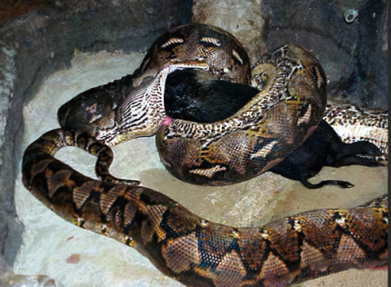

Ce sont tous des carnivores. Mais s'ils ne trouvent pas de proies à avaler, ils sont capable de jeuner plusieurs mois et meme jusqu'à un an!
Ce python à gauche, est le plus long: il mesure 10m et pèse 150kg. Et L'anaconda à droite, est le plus gros: 250kg pour 8m de long et plus.

Le serpent filiforme à gauche, avec ses 10cm de long, est le plus petit. Et ce "serpent-volant" à droite, se déplace en sautant d'arbre en arbre.